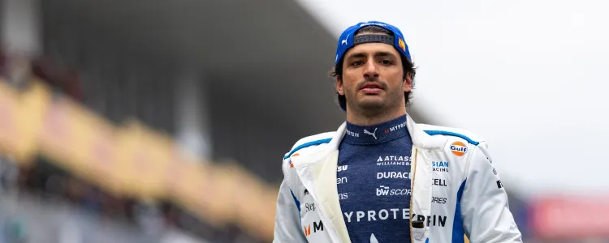
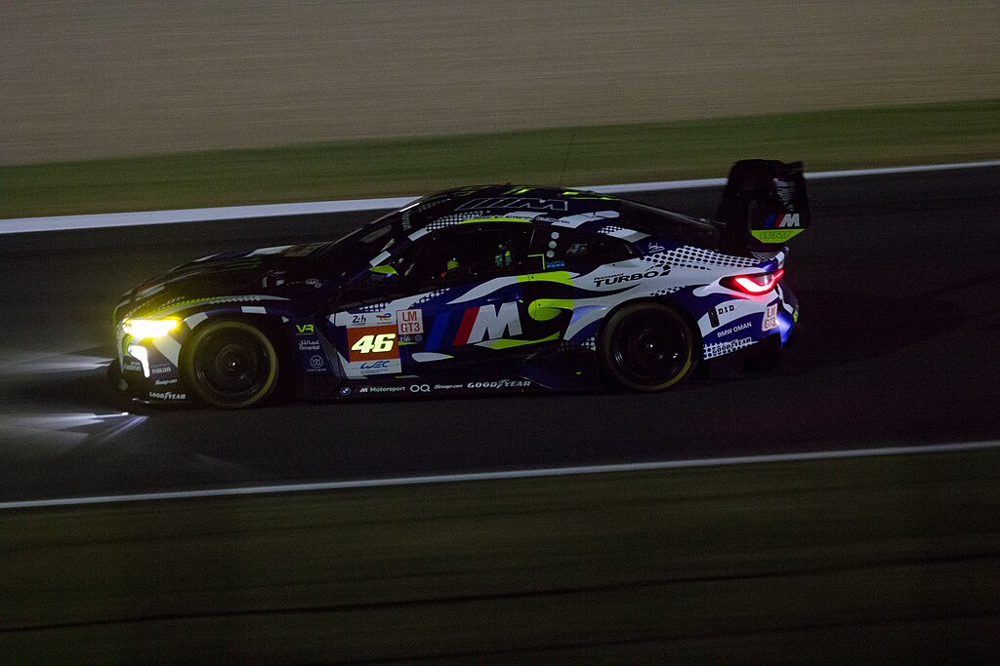
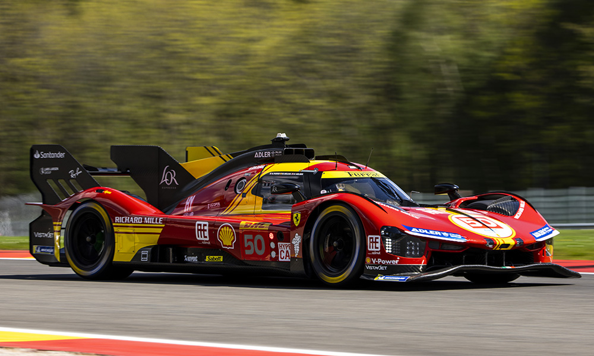

Vítejte na stránce o mých zájmech v motorsportu!
Mé zájmy v závodní sérii Formule 1
- Můj oblíbený tým
- Atlassian Williams F1 Team
- Můj oblíbený jezdec
- Carlos Sainz
- Můj oblíbený okruh
- Spa-Francoshamps v Belgii

Mé zájmy v závodní sérii WEC
LMGT3
- Můj oblíbený tým
- Team WRT
- Můj oblíbený jezdec
- Valentino Rossi
- Můj oblíbený okruh
- Circuite de la Sarthe ve Francii

Hypercar
- Můj oblíbený tým
- Ferrari AF Corse
- Můj oblíbený jezdec
- Antonio Giovinazzi
- Můj oblíbený okruh
- Circuite de la Sarthe ve Francii
